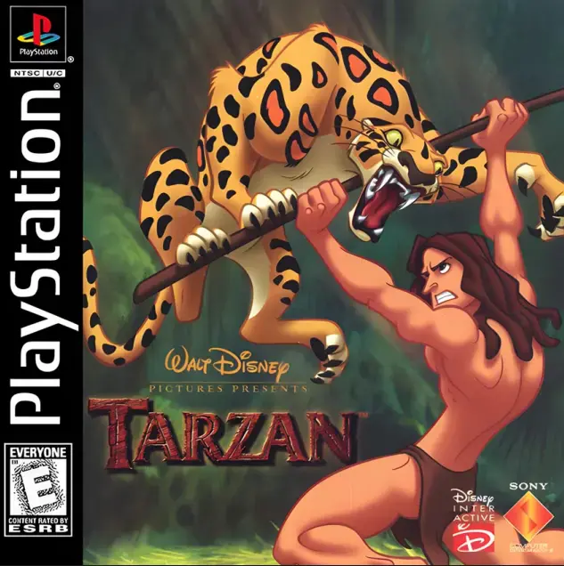

Sobre o Jogo
Lançado em 1999 para o PlayStation 1 (e posteriormente para PC, N64 e Game Boy
Color), Disney's Tarzan é um dos melhores exemplos de jogos baseados em filmes daquela era.
Desenvolvido pela Eurocom, o game utiliza um estilo "2.5D", onde o gameplay é de plataforma lateral,
mas os cenários e personagens são renderizados em 3D, criando uma profundidade incrível para a
época.
Por que ele merece entrar na coleção? Além de capturar perfeitamente a estética do
filme, o jogo é extremamente fluido. As mecânicas de "surfar" nos galhos e balançar nos cipós são
satisfatórias até hoje. A trilha sonora conta com adaptações das músicas icônicas de Phil
Collins, o que eleva a nostalgia ao máximo.
Como Salvar
O sistema de salvamento deste jogo é clássico do PS1:
- Memory Card: Você precisa ter um Memory Card inserido no Slot 1 ou 2 antes de
iniciar o console.
- Tela de Conclusão de Nível: Ao terminar uma fase (chegar até o guarda-chuva da
Jane), você verá a tela de pontuação. Lá, pressione o botão Quadrado (Square)
para salvar seu progresso.
- Load: Para continuar, selecione "Load Game" no menu principal e Jane guiará
você até seus arquivos salvos.
Curiosidades da Selva
- Vozes Originais: O jogo utiliza talentos de voz do filme original, mantendo a
autenticidade da experiência cinematográfica.
- Segredos do 100%: Se você coletar todas as letras T-A-R-Z-A-N
em todas as fases e completar 100% do jogo, você desbloqueia um vídeo especial da Disney.
- Níveis de Bônus: Para acessar as fases de bônus (como a corrida da cegonha),
você precisa encontrar as 4 partes de um esboço (sketch) escondidas em cada
nível.
- Armas Frutíferas: O Tarzan não usa apenas a faca. Existem frutas coloridas com
poderes diferentes: a Fruta Azul é a mais rara e poderosa, funcionando como uma
"bomba" que limpa a tela de inimigos.
📖 Manual Original: Clique aqui para abrir o PDF
📹 Youtube: Video com gameplay completa
Divirta-se jogando!